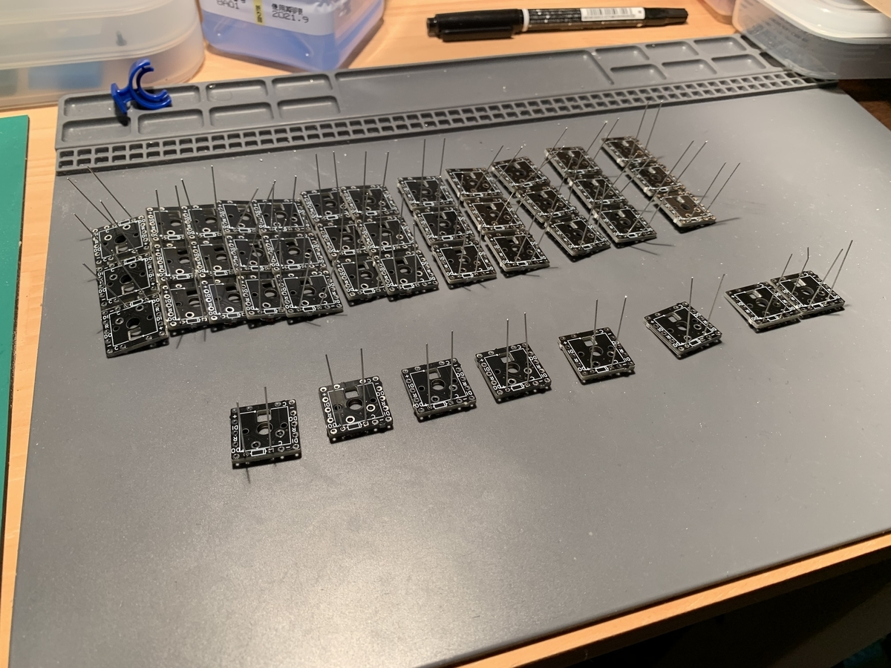
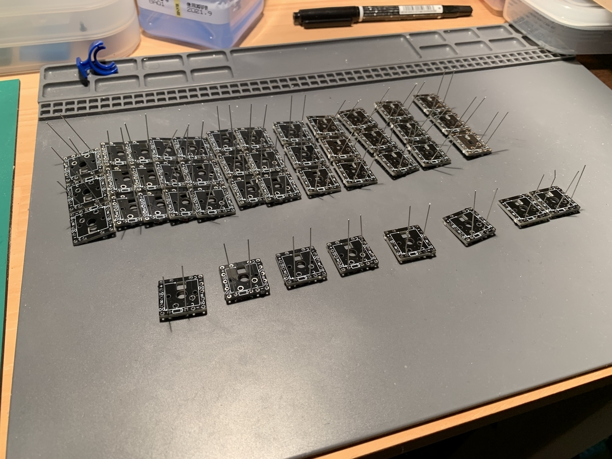

Claw44を作った話
キーボード #1 Advent Calendar 2019 - Adventar
16日目の記事です。
いち自作キーボードユーザだった自分が、何の知識もないながら、設計から販売まで行った記録です。
同じようにレイアウトにこだわったキーボードを作りたい人に雰囲気だけでも感じ取ってもらえればと思い書きました。
1年くらい前の話なので、細部が曖昧ですが・・ 振り返っていきます。
(画像多いのもあり、長いです・・・）
動機
本業がソフトウェアエンジニアで肩こりがひどく、それの解消にと思いErgodox EZを買ったのが始まりでした。 レイヤーや今までと違うキーレイアウトに慣れてきて、これは素晴らしいものだと確信。 しかし、使い込み、習熟するにつれ、大きすぎるしキーはこんなにいらないな〜と不満点も芽生えてきました。
そうこうしているうちに手に入りやすいキットが出てきて、Iris, Corne, Helix Pico, Ergodash mini… など、とにかく作る日々に。 色々なキーボードを試し、それぞれの良さを実感しながらも、使い込めば込むほど自分との細かい違いが気になるようになってきました。 小さい差なのですが、毎日ハードに使うものなので蓄積されていくと無視できなくなり・・・ これは自分で作らないと解消されないのだろうなと思い、設計することを決意しました。
目的
自分が最初に感じていたのは、
- 長時間使っていると親指が痛くなる（キーキャップの角が当たる）
- 小指を使うと、手全体が動いてしまう
- 何もしてない時にわりと疲れる（キーボードの上に手を置いて思考してる時とか）
というようなことでした。 このような負担をキーのレイアウトを変える事によって減らし、快適に打鍵できるようにする事を目的にしました。
開発方法
はじめは本当に何もわからなかったので、@foostanさんの自作キーボード設計入門が頼りでした。まずはここに書かれている事を理解して、色々なツールを触るところから始めました。
また、キーレイアウトが肝なので、実際に打鍵をして検証を繰り返す事は必須と考え、たまたま買ったばかりの3Dプリンタを使って進めていく事にしました。
グラフィックソフトもCADもよくわからない状態だったので、下記のような手順でやり始めました。
- ベースはCorneのイラレデータを使わせていただき、Fusion360に読み込ませて、スイッチの穴を増減したり移動したりする
- 3mm厚のプレートを3Dプリントする（当時は本当に厚みつけるくらいしかできなかった・・）
- 実際にスイッチ、ネジ、スペーサーなどをはめて完成させる
- 実際の打鍵感を確認して、修正を繰り返す
キーレイアウトの検討
2Dプリンタによるキーレイアウトの検討
いきなり3Dプリントするのもコストが掛かるので、まずは紙に印刷して試行錯誤する。
v1
とりあえずCorneをベースに親指、小指部分を変えてみる。
親指キーを一つ増やす
小指を大幅にずらしてみる

v2
キーを増やしたり、小指側いじったり。まだあんまりピンときてない。

小指を中心にちゃんと考え始める
v3
小指と薬指は連動して動くと感じたので、小指だけ角度を変えるのはやめた。
親指以外はキーボードの範囲内では同じ方向の動きの方がしっくりくる。
この時は、小指の島を離した方が良いと思っていた。
Pは小指で打っていたが、薬指の方が効率的かと思いお試しでこの位置にしていた。
親指も微調整。
v4
外側を2キーに。（外側下段は使ってなかったので）

v5
Pに薬指はホームポジションが若干動くので元に戻す。
外側をさらに低くする。
v6
親指周りを微調整。
3Dプリンタによるキーレイアウトの検討
この辺から3Dプリンタで試作を始める。
v7
親指、小指周りを微調整。細かい調整やってるなあ。
こんなプレートを作って

組み立てて検証を繰り返す。

v8-1
小指なんか違う・・・
やはり外側下段は結構つらいのでフラットな感じにする。

v8-2
外側上段が少しつらいので、やや下げる。
親指も同時に調整。

v8-3
さらに小指をちょい下げ 。 親指も調整。
v9
小指を一旦戻す。迷走中。
外形も悩みだす。
v10
小指外側の列のズレはだいたい確定。
小指ホームポジションから外側の上段・中段が両方とも押しやすい位置に落ち着いた。
外側下段は自分は使用頻度低いので押しやすさのプライオリティはとても低い。

v11
外形どうしようか悩む。
v12
外形を気にしてか、空きスペースにキーをキーを置いている。使わないのでボツ。
v12とv11を3Dプリントしてセットアップした物

無限の可能性！
最終的には基板を作らねばと思い3Dプリンタを走らせてる間に、自キ設計入門を進める。
回路図は比較的簡単なので、すんなり作れる。
問題は基板設計。
Corneをベースに拡張させてもらおうと思ったが、パーツをずらしても配線はついてこないのでもう訳がわからなくなってしまう。 リバーシブル・LED・mx,choc対応と配線が多く、ちゃんとわかってないのにこれを拡張していくのは無理かなと断念。 そんな中で出会ったのが無限の可能性でした。
PCB1つが1キーに対応していて、
組み合わせによって基板設計ができなくても
理論上どんなキーボードでも作れます。
基板を作らないやり方としては、全て手配線でやるやり方もあるのですが、ハードル高そう・・・これは一つのキーを1ユニットとして、その間の配線だけ自分でやれば良いので初心者でもなんとかなりそうと感じた。
この配線をする行為を物理的に行うことで、やっと概念が理解できた気がした。
なるほど、これを基板図で表現すれば良いのかと。
ということで、作っていきました。
ProMicroのお家の位置を妄想したりする

ダイオードをはめる

キースイッチにくっつける
ひたすら配線！

できた！
そして、動いた！KiCadしなくても動かせる！！
「う・ご・い・た！ うれしい〜😂 これで実践で使いやすいか検証できる。 自キ設計初心者くらいにはなれたかな。 https://t.co/8HCvXdUtgn」 / Twitter
と、だいぶ感動したもの。
自分一人で使うならこの状態で使うのは何の問題もないと思う。
3Dプリンタのプレートもけっこう良い感じだった。
実際に動くものからフィードバックを得て改修
モックとして動くのを想定しての検証と、実際に業務などをしながら得られる検証では雲泥の差があった。
細かいコンビネーションや打鍵の流れはやはり実践しないと再現が難しいと思う。
v13
まず思ったのが、親指が全然ダメ・・・
一気にキーを下げる。あの微調整の日々は何だったんだろうか。

v14
親指外側のお試し。

v15
親指から弧を描くように配置するのが自然？
v16
弧を大きくして微調整。
v17
指の上下移動が斜めになっていることに気付き、小指を傾ける。
v18
連動して薬指をちょっと下げる。
薬指と小指の連動性をかなり研究していた。


無限の可能性のお引っ越し！
しばらく使って試そうかと思ったが、親指も小指もダメダメだったので早々に次バージョンを実践したくなる。
が、無限の可能性・・これもう一回やるのつらいし、もったいないな・・・
レイアウトは大きく変わってないし、このままお引っ越しできないかな？
と思い、ハンダシュッ太郎を購入。
なかなか大変だったけど、スイッチのハンダを吸い、取り出しに成功！
新しいプレートに載せ替え。届かない部分などもあったので一部配線し直し。
引っ越し完了！

最終形へ
新バージョンを使い続け、さらに改修を続けていきます。
v19
小指以外も素直に傾ける。
小指の島もくっつけるように変更。
このあたりでケースは水平に、キーはそれに対して角度をつけることにより、常に理想的な角度を保つアイディアが生まれた。
v20-23
外形を模索


v24
親指キーを親指付け根を中心とした弧の上に置いたのは良いのだが、逆にどのキーにも自然に手が行ってしまいホームポジション（内側から2個目）を特定しづらかった。
何かホームポジションを差別化したいと思い1.25Uに変更。
一番よく使うキーが広くなり、負担軽減もできているので良い選択だったと思う。
v25
幅広になったことで、そのまま両サイドをスライドさせてしまうと遠くなるので微妙に縦方向にずらす。
これにより親指の移動距離は変わらずに配置できた。
これがちょうどよく機能して、どのキーも親指の当たる部分が違うようになり、それぞれのキーが認識しやすくなった。

v26
ちょっとだけ下げる
v27で最終形！
これで再度、無限の可能性を作成。
前とはけっこう変わってしまったので、ここは一から作る！
 



ここで基本的なキーレイアウトは完成！
これを忘年キーに持って行って初お披露目になりました。
3Dプリンタの残骸
全部のバージョンをプリントしてはいないのですが、まとめるとこれくらいの量に・・・
KiCadも頑張った！
その後、なんとかKiCADも頑張り、初めての基板発注→アルファ版完成！


ここからベータ版までが長かった・・・
Corne Cherryに憧れてPCBプレートのマットブラックでいきたがったが、露出部分が多いClaw44には向いていないと判断。（そもそも用途的にすごいキレイな状態で来るわけでもないので）
アクリルプレートのマットブラックに切り替え。
外形を丸みを帯びた形に変更。
その後もPCBトラブルに揉まれつつも何とかベータ版まで完成！


リリース
ベータ版でのフィードバックなどを盛り込み正式リリースへ。
自分で作ったものを売るという経験がなかったので、梱包やら発送やらキーボードを作る以外にもやることが盛り沢山でしたが、先人やコミュニティの知恵などをお借りして、無事に販売することができました。ありがとうございます！
販売できるレベルにするのは中々大変だったけど良い経験でした。
言語化
販売をしているとどのようなモノなのか説明をする必要がでてきます。
手探りで自分に合うものを構築していったので、はじめはうまく言語化できていませんでしたが、使ってくれた人との会話やブログ、ツイートなどで何となく良さがわかってきて書いた記事がこちらです。
3つの大きな特徴について説明しています。
しばらくはこのままだったのですが、この前の天キー3でキーボードの紹介プレゼンをするにあたって、もっとシンプルにしました。
自然に手を開いた状態で打鍵ができるキーボード
自分が追い求めていたのは結局こういう事なのかと。
説明しやすいし、わりと気に入っています。
最後に
去年の今頃、ちょうどClaw44を必死に作っていたのを思い出しながら書いてみました。
これでendgameかと思いきや、Claw44をコンパクトに一体型にしたbat43というキーボードを開発中です。
アルファ版を天キーに持っていきましたが、出たら買います！という人が結構いてくれてうれしかったです。
今もドッグフーディング中ですが、販売できるレベルにはもうちょっと時間が掛かりそうなので気長にお待ちいただけると助かります。
またキーボード以外にもねじカウンター、CorneStandなど作ってきましたが、これからも気ままに色んなものを作っていきます。